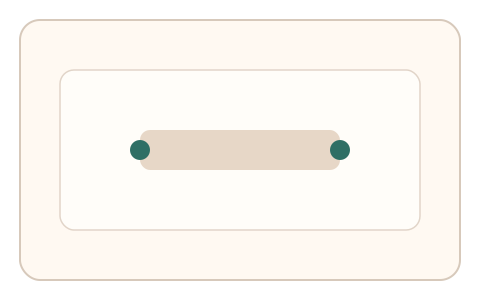
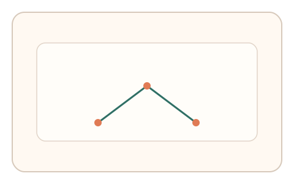

#160
Reverse Brainstorming - Round 2
已扩展
风险分层减负
低风险场景采用短序列低负担任务，高风险触发多阶段验证。
概念原文
低风险场景只需短序列低负担任务，高风险或异常行为触发多阶段验证，降低整体误拒率。
让“安全强度”与“用户负担”动态平衡，避免可用性崩溃。
研究背景
安全强度应与风险动态匹配，避免所有用户承担高负担。分层策略可降低误拒并保持安全性。
核心机制
- 低风险采用短任务快速通过。
- 异常或高风险触发多阶段验证。
- 多阶段任务采集多信号。
- 按风险级别输出判定。
用户流程
- 步骤 1：用户完成低负担任务。
- 步骤 2：系统判断是否升级。
- 步骤 3：必要时进入多阶段验证。
判定信号
风险评分
决定任务强度与验证路径。
多阶段行为信号
高风险需要更强判定信号。
判定逻辑
低风险直接通过；高风险需满足多阶段阈值。
对抗面
- 伪装低风险绕过
- 针对低负担任务优化脚本
防御与缓解
- 动态风险评估与随机抽检
- 低负担任务加入轻量行为信号
- 升级任务参数随机化
可达性与风险
多阶段任务提供等效替代通道与慢速模式。
- 风险模型误判带来体验波动
- 多阶段验证增加时延
可视化状态

状态 1：低负担流程
低风险快速任务。

状态 2：多阶段验证
高风险触发多阶段任务。

状态 3：分层判定
按风险级别输出结果。
参考资料
Risk-based authentication
说明风险分层的验证策略。
Usability
说明可用性与负担权衡。